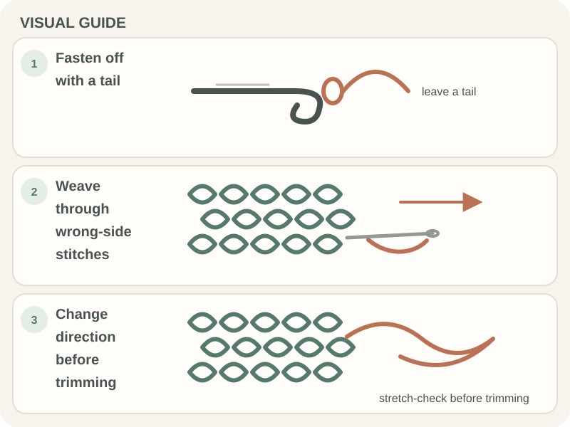

Patterns & Troubleshooting · Beginner guide
How to Finish a Crochet Project Neatly
A neat finish secures the active loop, weaves in each tail, and checks seams without pulling the fabric out of shape.

Short answer: A neat finish secures the active loop, weaves in each tail, and checks seams without pulling the fabric out of shape.
Finishing is more than trimming ends: inspect the edges and joins, then secure each tail using a method that suits the project’s stretch and fiber.
Before you begin
Keep a blunt tapestry needle and scissors nearby. Leave enough tail to weave through several stitches and follow the yarn label if the item will be washed.
Step-by-step instructions
- Fasten off as the pattern directs and secure the active loop without tightening the final stitch excessively.

Real crochet photograph by Miriam Alonso via Pexels. - Thread each tail onto a blunt tapestry needle and weave through the wrong-side stitches.
- Change direction and gently stretch the fabric to test that the tail stays hidden.
- Inspect seams and edges, then trim only after the finish feels secure.

How to check your work
The edge should not pucker, the seam should not gap, and tails should stay hidden during a gentle stretch. Check the wrong side too.
Common beginner problems
- A tail shows through the right side: Undo that section and follow the underside of stitches instead.
- The edge puckers: Loosen the woven path; the tail should not cinch the fabric.
- The seam gaps: Re-sew through matching stitch loops and check the seam before trimming tails.
Finishing checklist
Before calling a project done, check each tail, seam, edge, and care instruction. If the item needs blocking, confirm the yarn can tolerate the chosen method first.
Frequently asked questions
Should I knot the yarn tail?
A knot can leave a bump; follow the pattern’s finishing method and weave securely.
When should I trim a tail?
After weaving and gently checking that it holds.
Do I need to block the project?
Only if the pattern or shape benefits from it and the fiber-care directions allow it.